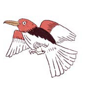
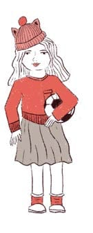
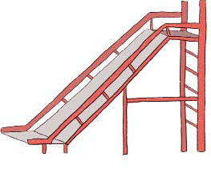
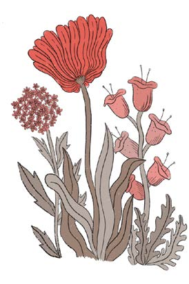
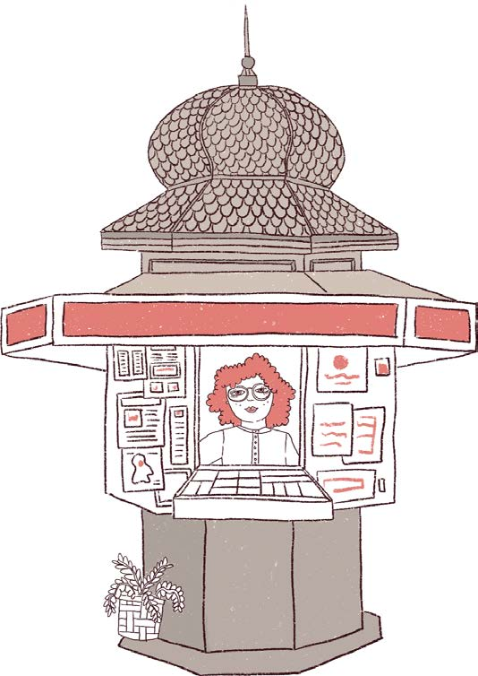
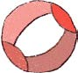

Tobogán (me gustan más las hamacas)
Pájaros
(averiguar la especie)
Kiosko de Maruja
(los mejores caramelos)
La pelota de Pedro
(siempre la pierde)
Las flores favoritas de mi abuela
Lucía con la pelota de Juliana